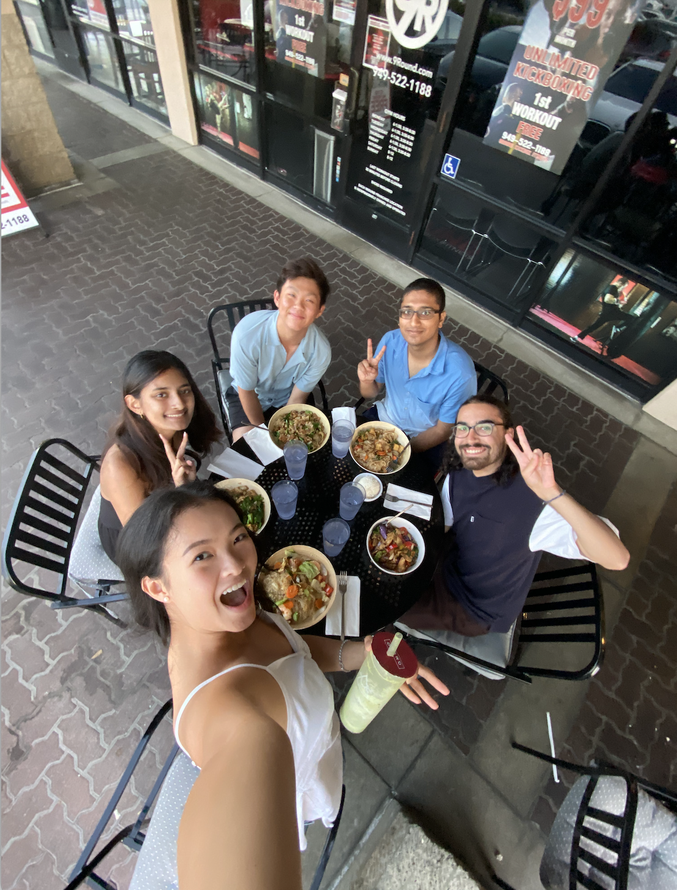

Welcome to My Website
My name is Aileen. I am a third-year student studying Economics and an aspiring management consultant. Outside of my studies, I am an advisor for USC OWN IT. USC OWN IT is a annual one-day leadership summit on the USC campus. Our summit addresses the lack of gender equity in schools, the workforce, and society by uplifting marginalized voices, celebrating unconventional paths, and responding to societal needs. Outside of school, I work for a pretty cool financial services search firm. On the weekends, I love exploring LA with friends. Read on to find out all about life as a USC student!